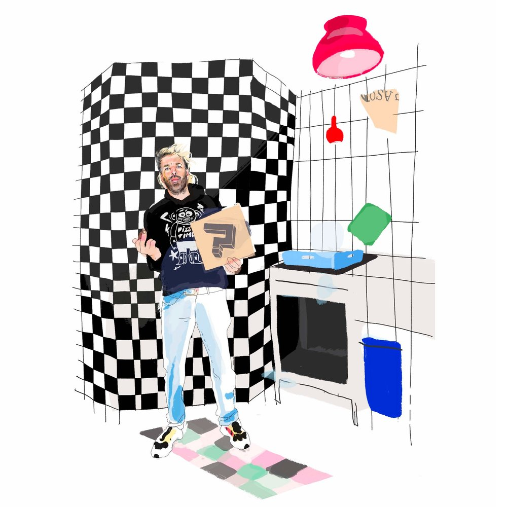

The Bird Tsang
Regelmatig vinden we gerechten van onze favoriete restaurants op heel bijzondere borden. Eenmaal leeg gegeten en opgeveegd het bord omkeren leert ons dat dit vaak keramiek van The Bird Tsang is.

Punk Pizza
Op de allerlaatste hoek van de woonwijk Lombok, ook wel omschreven als het multiculturele hart van Utrecht, vind je een pizzeria met een eigenaar die noch horecaman, noch chef, noch groot pizzaliefhebber is.

Codium
Midden in Goes vinden we Codium, met daarin de immer creatieve keuken van chef Wouter Kik. Samen met compagnon, maître-sommelier Jean Luc Etienne, zet hij een eigenzinnige zaak neer.